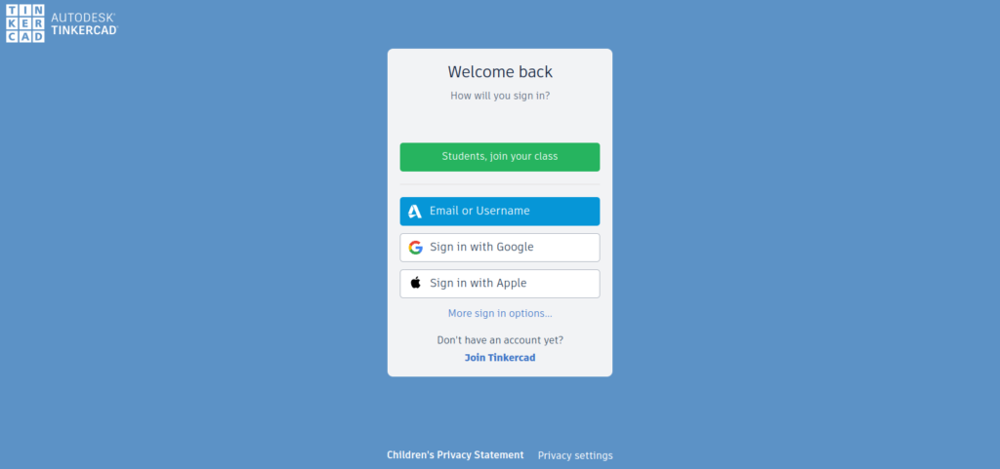
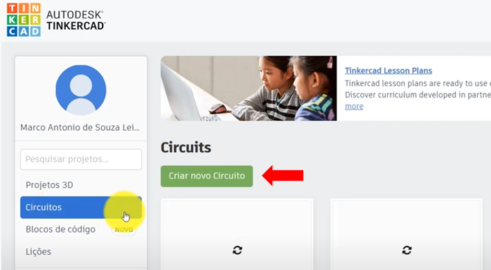
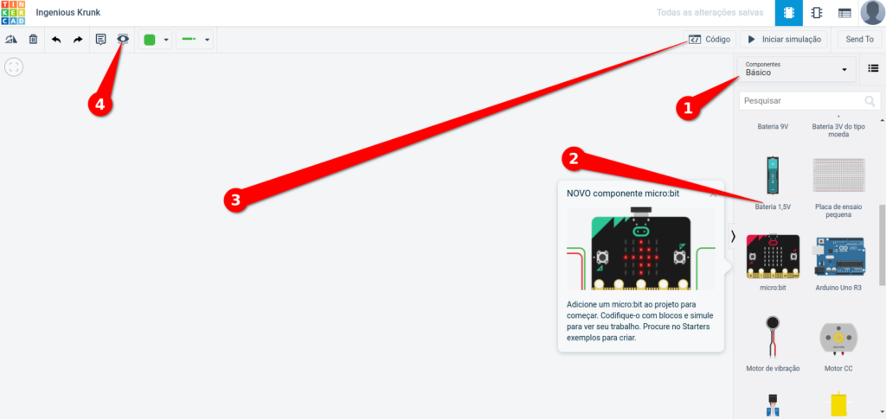
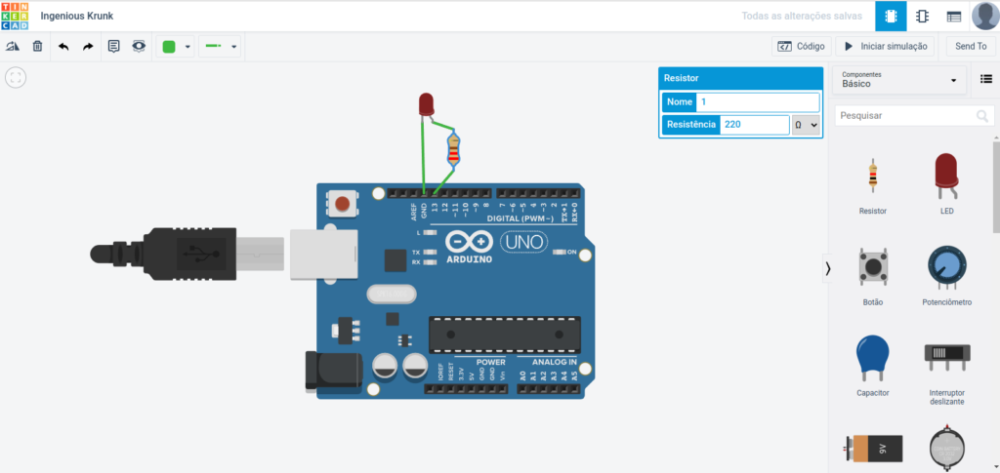

Informática Básica e Robótica
Tinkercad
Tinkercad é um programa de teste de circuitos e modelagem tridimensional modelagem tridimensional (3D) online gratuito que roda em um navegador da web,
conhecido por sua simplicidade e facilidade de uso.
Desde que se tornou disponível em 2011, tornou-se uma plataforma popular para a criação de modelos para impressão 3D e para usar o
arduino UNO R3 de forma virtual, bem como uma introdução básica à geometria sólida construtiva nas escolas.
A plataforma pode ser acessada pela página Martematica em programas e plataformas, é uma ferramenta essencial para criar circuitos eletricos e eletrônicos
Quando entrar na página da plataforma ir em Fazer login ou se for seu primeiro acesso inscrever-se
O aluno pode usar a conta google @escola basta criar uma senha entrar com a conta estudante,
na imagem abaixo escolha entrar com conta google

Depois que já esta logado na plataforma, vá em Circuitos e Criar novo circuito

a plataforma vai abrir a area de trabalho de criação, segue a imagem abixo:

- Componentes eletrônicos para escolha
- componentes para uso, basta arrasta-lo para area de montagem
- Caso seu circuito for eletrônico neste local você adiciona a programação seja em bloco ou escrita
- Caixa de anotações onde pode descrever detalhes do seu circuito
Aqui imagem já com um arduino uno componente principal para circuito eletrônicos
